Keycloak授權服務
上一篇詳細介紹了如何在Spring boot中集成Keycloak來進行應用程式的認證，將認證與授權從業務抽離出來，減少了代碼的撰寫，但在實際的生產環境中，僅僅進行認證服務肯定是不夠的，還需要授權功能。這一篇文章將介紹keycloak對服務所支援的授權功能
keycloak所支援的授權策略
Keycloak支持細粒度的授權策略(authorization policies)，並可以對這些策略進一步組合，例如：
- Attribute-based access control (ABAC): 基於屬性的安全控制
- Role-based access control (RBAC): 基於角色的安全控制
- User-based access control (UBAC): 基於用戶的安全控制
- Context-based access control (CBAC): 基於上下文的安全控制
- Rule-based access control: 基於規則的安全控制
- Using JavaScript
- Time-based access control: 基于時間的安全控制
- Support for custom access control mechanisms (ACMs) through a Policy Provider Service Provider Interface (SPI): 通過SPI自定義訪問控制策略(ACMs)
Keycloak提供了創建受保護資源和範圍權限的必要方法，將這些權限(permissions)與授權策略(authorization policies)相關聯，並在應用程序和服務中實施授權決策。
對於基於
RESTful的資源服務器，該信息通常是從安全令牌中獲得的，通常是在每次向服務器請求時作為承載令牌發送的。對於
依賴會話來認證用戶的Web應用程序，該信息通常存儲在用戶會話中，並針對每個請求從該會話中檢索。
資源服務器通常執行的是基於角色的訪問控制(RBAC)策略，即檢查用戶所擁有的角色是否關聯了要訪問的資源。雖然這種方式非常有用，但是它們也有一些限制：
- 資源和角色緊密耦合，角色的更改（如添加、刪除或更改訪問上下文）可能影響多個資源。
- 基於RBAC的應用程序無法很好地響應安全性需求的調整。
- 項目規模擴大時，覆雜的角色管理會很困難而且容易出錯。
- 不夠靈活。角色並不能有效代表用戶身份，即缺乏上下文信息。客觀上來說被授予了角色的用戶，至少會擁有某些訪問權限。
時至今日，我們需要考慮異構環境，即用戶分佈在不同區域，使用不同的本地策略，使用不同的設備以及對信息共享的需求很高，Keycloak授權服務可以幫助您提高應用程序和服務的授權能力通過提供：
- 不同的訪問控制機制以及細粒度的授權策略。
- 集中式的資源、權限以及策略管理。
- 集中式的策略決策。
- REST風格的授權服務。
- 授權工作流程和用戶訪問管理。
- 可作為快速響應您項目中安全需求的基礎設施。
Keycloak授權架構
從設計的角度來看，授權服務基於一組定義良好的授權模式，它們提供以下功能:
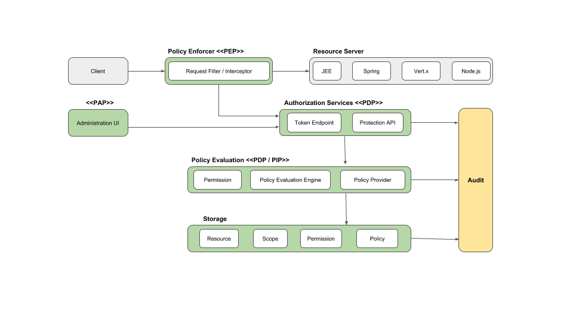
- 策略管理點(PAP)
提供基於Keycloak管理控制台的一組UI，以管理資源服務器，資源，範圍，權限和策略。通過使用Protection API可以部分完成此操作 - 政策決策點(PDP)
提供一個可分配的策略決策點，指向授權請求發送到的位置，並根據請求的權限對策略進行相應的評估。有關更多信息，請參見Obtaining Permissions。 - 政策執行點(PEP)
提供針對不同環境的實現，以在資源服務器端實際執行授權決策。Keycloak提供了一些內置的Policy Enforcer。 - 政策信息點(PIP)
基於Keycloak Authentication Server，您可以在評估授權策略時從身份和運行時環境中獲取屬性。
Keycloak授權流程
主要步驟為三個流程，以了解如何使用Keycloak為應用程序啟用細粒度授權:
- 資源管理(Resource Management)
- 權限和政策管理(Permission and Policy Management)
- 政策執行(Policy Enforcement)
資源管理(Resource Management)
首先需要指定Keycloak希望保護的內容，通常代表Web應用程序或一組一個或多個服務。使用Keycloak管理控制台管理資源服務器。在那裡，可以啟用任何已注冊的客戶端應用程序作為資源服務器，並開始管理要保護的資源和範圍。

資源可以是網頁，RESTFul資源，文件系統中的文件，EJB等。它們可以表示一組資源(就像Java中的class一樣)，也可以表示單個特定資源。
例如某個用戶能訪問或控制某個區域的設備，區域和設備等都可以看作是資源。範圍(scope)通常表示可以對資源執行的操作，但它們不限於此。還可以使用範圍來表示資源中的一個或多個屬性。
權限和政策管理(Permission and Policy Management)
定義資源服務器和要保護的所有資源後，必須設置權限(permissions)和政策(policies)。**(重要)**
此過程涉及實際定義管理資源的安全性和訪問要求的所有必要步驟。政策定義了訪問或執行某些操作(資源或範圍)必須滿足的條件，此部份是通用的，可以重用來構建權限甚至更覆雜的策略。
Keycloak提供了一些內建的政策，比如基於Role的，基於Group的，或者基於User的政策，涵蓋了最常見的訪問控制機制。您甚至可以根據使用JavaScript編寫的規則創建政策。

定義政策後，即可開始定義權限，權限又與要保護的資源相結合。此處指定要保護的內容(資源或範圍)以及授予或拒絕權限必須滿足的政策。
後面會有詳細的例子介紹如何創建使用。
政策執行(Policy Enforcement)
政策實施涉及必要的步驟，以實際對資源服務器實施授權決策。
這是通過在資源服務器上啟用能夠與授權服務器進行通信，請求授權數據並基於服務器返回的決策和權限來控制對受保護資源的訪問的政策服務器或PEP來實現的。

Keycloak提供了一些內置的Policy Enforcer實施，具體取決其運行的平台。
keycloak授權服務
keycloak授權服務由以下RESTFul端點組成:
- 令牌端點(Token Endpoint)
- 資源管理端點(Resource Management Endpoint)
- 權限管理端點(Permission Management Endpoint)
每個服務都提供一個特定的API，涵蓋授權過程中涉及的不同步驟。
令牌端點(Token Endpoint)
一般熟知的Oauth流程
OAuth2客戶端(例如前端應用程序)可以使用令牌端點從服務器獲取訪問令牌，並使用這些相同的令牌來訪問受資源服務器保護的資源(例如後端服務)。
以相同的方式，Keycloak授權服務提供OAuth2的擴展，以允許基於與所請求的資源或範圍相關聯的所有策略的處理來發出訪問令牌。
這意味著資源服務器可以基於服務器授予的訪問令牌所擁有的權限來強制對其受保護資源的訪問。在Keycloak授權服務中，具有權限的訪問令牌稱為請求方令牌(Requesting Party Token)。
Protection API
Protection API是一組符UMA的端點，為資源服務器提供操作，以幫助他們管理與之關聯的資源，範圍，權限和策略。只允許資源服務器訪問此API，這也需要uma_protection範圍。
Protection API提供的操作可以分為兩大類：
- 資源管理(Resource Management)
- 創建資源(Create Resource)
- 刪除資源(Delete Resource)
- 按ID查找(Find by Id)
- 詢問(Query)
- 權限管理端點(Permission Management)
- 發行許可票(Issue Permission Tickets)
默認情況下，遠程資源管理為啟用狀態。您可以使用Keycloak管理控制台進行更改，並且僅允許通過控制台進行資源管理。
實例演練
以下是我們要設置的方案:
- 新建一個Realm:
authorization-demo - 在此Realm下，新建一個Client:
bank-client - 定義一個
/account/{id}為該Client下的一個Resource - 在
/account/{id}這個Resource下，有此account::viewScope - 建立一個User:
bob - 建立三個角色:
bank_teller、account_owner和user - 我們將設置以下兩個Role-base policies:
bank_teller跟account_owner有權訪問/account/{id}Resourceaccount_owner有權使用account:viewScopeuser無權訪問任何Resource或Scope
- 使用keycloak內建的
Evaluate工具來測試授予或拒絕訪問權限。
配置Keycloak
基本配置內容可參閱上篇文章
建立Realm
- 將鼠標停在左上
master，然後單擊Add Realm按鈕。 - 輸入
authorization-demo作為名稱。 - 點擊Create。
- 確認左上角Realm在authorization-demo而不是master領域。
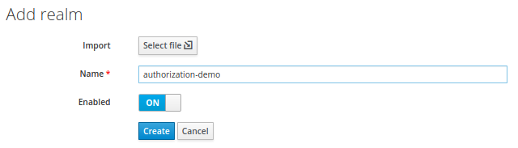
建立User
- 點擊左側的
Users選單 - 點擊
Add User按鈕 - 輸入
username(例如bob) - 確保
User Enabled為開啟狀態 - 請點擊
Save
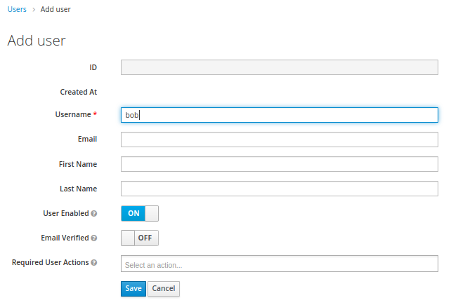
建立Roles
- 點擊左側的
Roles選單 - 點擊
Add Role - 添加下列角色：
bank_teller，account_owner和user
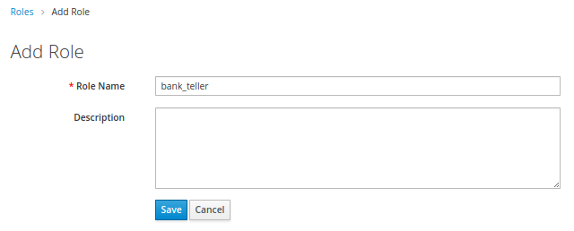
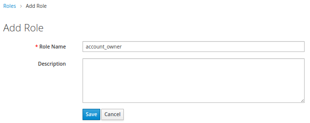
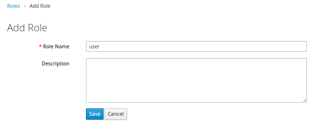
建立Client
- 點擊左側的
Clients選單 - 點擊
Create Client ID欄位輸入bank-apiRoot URL欄位輸入http://127.0.0.1:8000/bank-api- 點擊
Save - 確保
Client Protocol是openid-connect - 更改
Access Type為confidential - 更改
Authorization Enabled為On - 向下滾動並點擊
Save。Authorization應會顯示在上方 - 點擊
Authorization選項，然後再點擊Settings - 確保將
Decision Strategy設置為Unanimous- 這是 Resource server 的 Decision Strategy (決策策略)
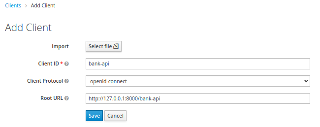
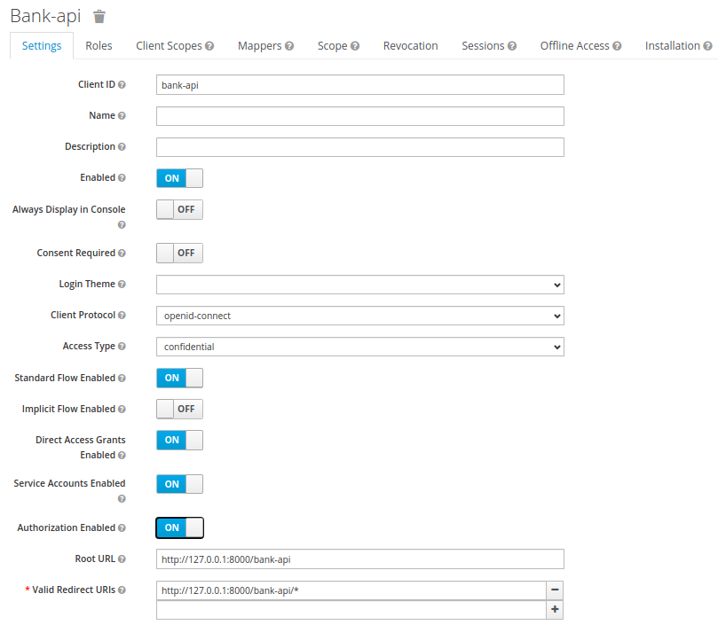
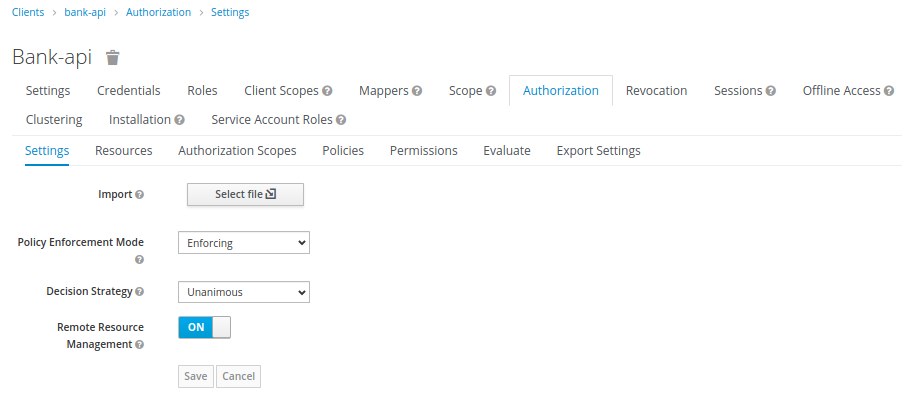
(補充) Decision Strategy
This configurations changes how the policy evaluation engine decides whether or not a resource or scope should be granted based on the outcome from all evaluated permissions. Affirmative means that at least one permission must evaluate to a positive decision in order grant access to a resource and its scopes. Unanimous means that all permissions must evaluate to a positive decision in order for the final decision to be also positive. As an example, if two permissions for a same resource or scope are in conflict (one of them is granting access and the other is denying access), the permission to the resource or scope will be granted if the choosen strategy is Affirmative. Otherwise, a single deny from any permission will also deny access to the resource or scope.
建立自定義Scope
- 點擊
Authorization標籤 - 點擊
Authorization Scopes→Create彈出Add Scope頁面 - 輸入
account:view名稱，然後按Save。
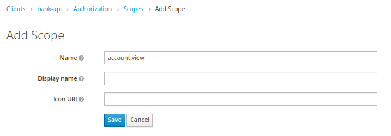
建立自定義Resouce
- 點擊
Authorization標籤 - 點擊
Resources - 點擊
Create Name和Display name輸入View Account ResourceURI輸入/account/{id}- 在
Scopes輸入account:view - 點擊
Save
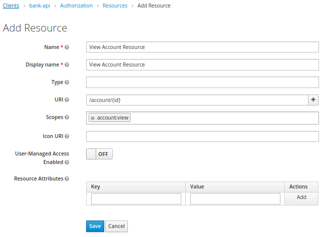
更多內容可參閱Create Resources
建立Policies(重要)
Create Only Bank Teller and Account Owner Policy
- 在
Authorization標籤下，點擊Policies - 從
Create Policy下拉選單中選擇Role - 在
Name輸入Only Bank Teller and Account Owner Policy - 在
Realm Roles選擇bank_teller和account_owner角色並加入 - 確保
Logic設置為Positive - 請點擊
Save
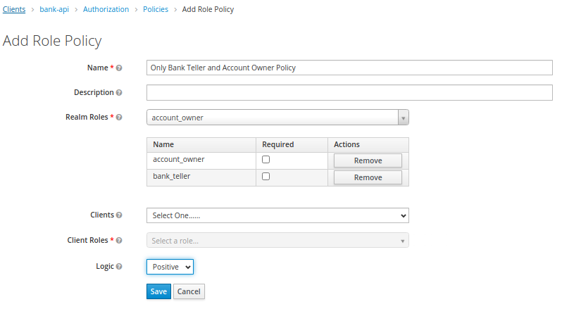
Create Only Account Owner Policy
- 再次點擊
Policies - 再次從
Create Policy下拉選單中選擇Role - 這次在
Name輸入Only Account Owner Policy - 這次在
Realm Roles下選擇account_owner - 確保
Logic設置為Positive - 請點擊
Save
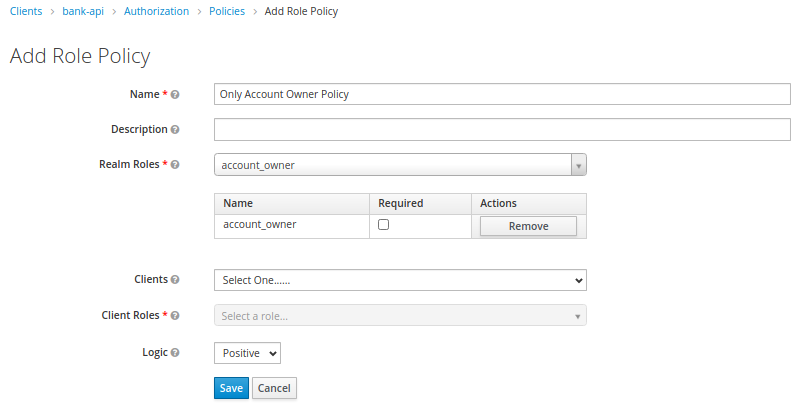
更多內容請參閱Role-Based Policy
其他Policy可參閱Managing Policies
建立 Resource-Based Permission
- 再次在
Authorization標籤下，點擊Permissions - 選擇
Resource-Based Name欄位輸入View Account Resource PermissionResources欄位輸入View Account ResourceApply Policy下Only Bank Teller and Account Owner Policy- 確保
Decision Strategy設置為Unanimous - 點擊
Save
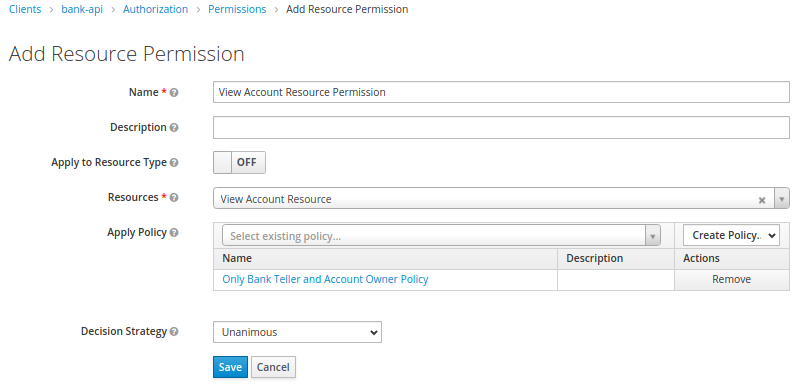
Evaluating the Resource-Based permission
- 再次在
Authorization標籤下，選擇Evaluate - 在
User輸入bob - 在
Roles選擇user- 我們在這將User與我們創建的Role做關聯。
- 在
Resources下選擇View Account Resource，然後點擊Add - 點擊
Evaluate
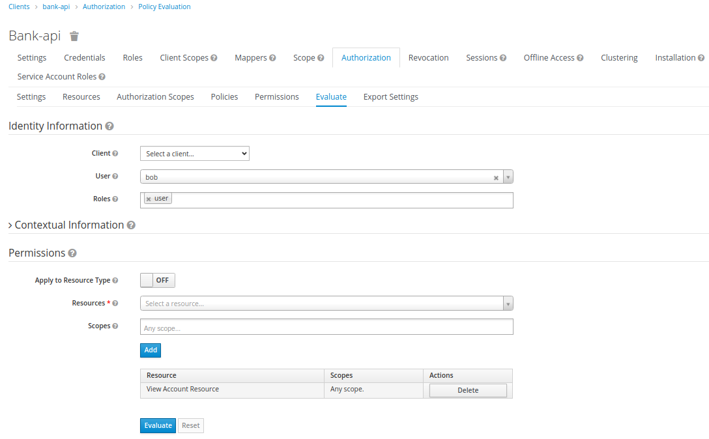
- 展開
View Account Resource with scopes [account:view]以查看結果，應該看到DENY。

- 此部份的驗證是對的，因為在上方我們建立的一個只允許兩個角色訪問該Resource:
Only Bank Teller and Account Owner PolicyPolicy - 點擊
Back回到Evaluate頁面 - 將
bob的角色更改為account_owner，然後點擊Evaluate。現在，應該看到結果為PERMIT。將角色更改為bank_teller，也是同樣結果。

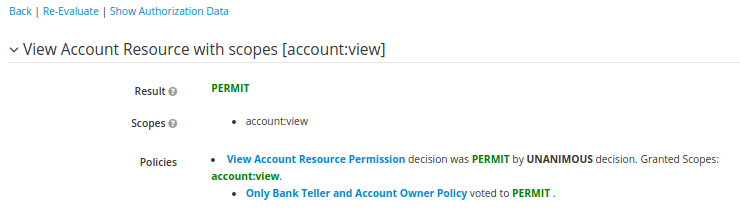
更多內容請參閱Evaluating and Testing Policies
建立 Scope-Based Permission
- 返回
Permissions標籤 - 在
Create Permission下拉選單中選擇Scope-Based Name輸入View Account Scope PermissionScopes輸入account:viewApply Policy輸入Only Account Owner Policy- 確保
Decision Strategy設置為Unanimous - 點擊
Save
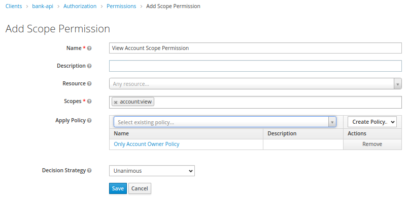
更多內容請參閱Creating Scope-Based Permissions
Evaluating the Scope-Based permission
- 再次點擊
Evaluate標籤 - 在
User輸入bob - 在
Roles選擇bank_teller - 在
Resources下選擇View Account Resource，然後點擊Add - 點擊
Evaluate，得到DENY- 因為設置了
bank_teller只可以訪問resource但不能訪問scope - 且Resource server的
Decision Strategy設置為Unanimous，最後的決定是DENY。(訪問resource評估為true，但訪問scope評估為false，所以得到DENY)
- 因為設置了
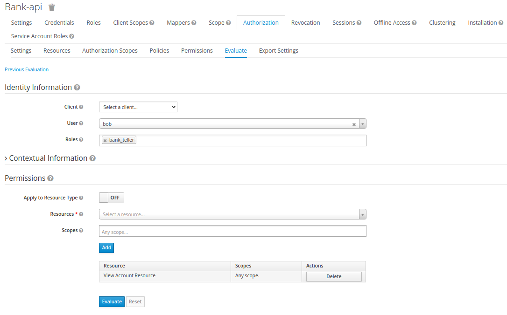
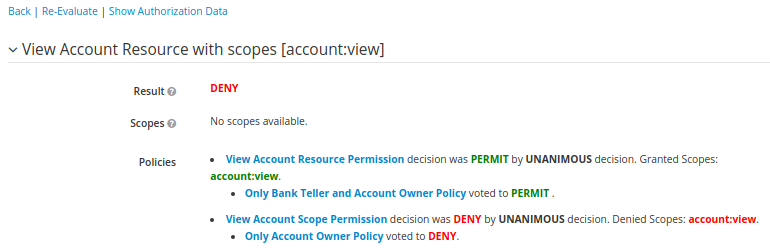
- 回到
Authorization下的Settings，然後將更Decision Strategy改為Affirmative，然後再次返回到步驟1-5。這次最終結果應該是PERMIT（其中一個權限為true，所以最終結果為true）。
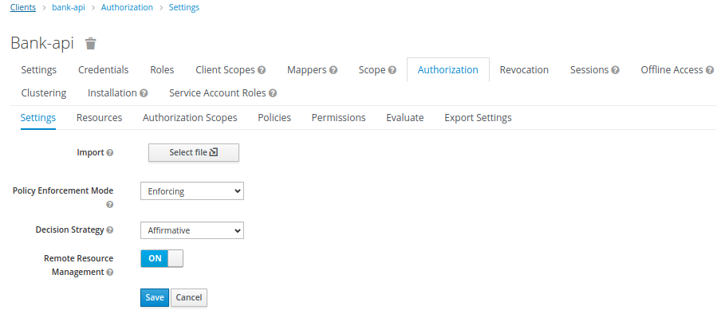
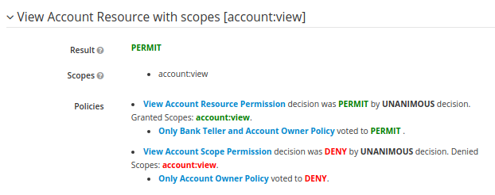
- 為了完整起見，將resource server的
Decision Strategy重新設置為Unanimous。重新實施步驟1至5，但這一次將角色設置為account_owner。鑑於account_owner可以同時訪問resource和scope，所以這次的結果PERMIT。
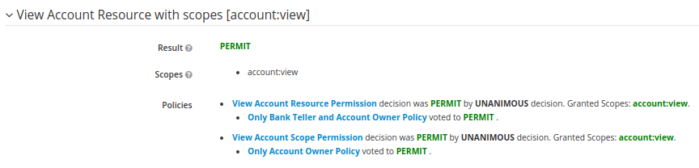
結論
說明authorization policies原理，以及透過實例來建制流程
- 先定義好scope
- 再建立resource，再把resource跟scope建立關聯
- 再建立policy(Role-Based、User-Based…)把resource與此policy關聯起來
- 再建立Resource-Based Permission or Scope-Based Permission。把 Policy與resource or scope關聯起來